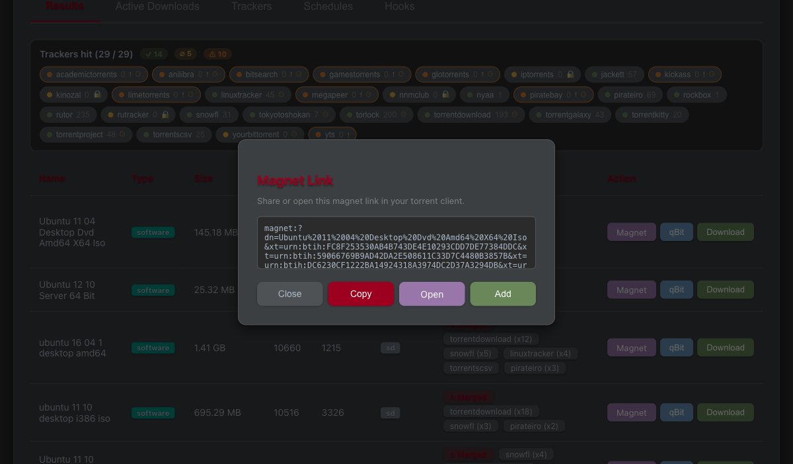
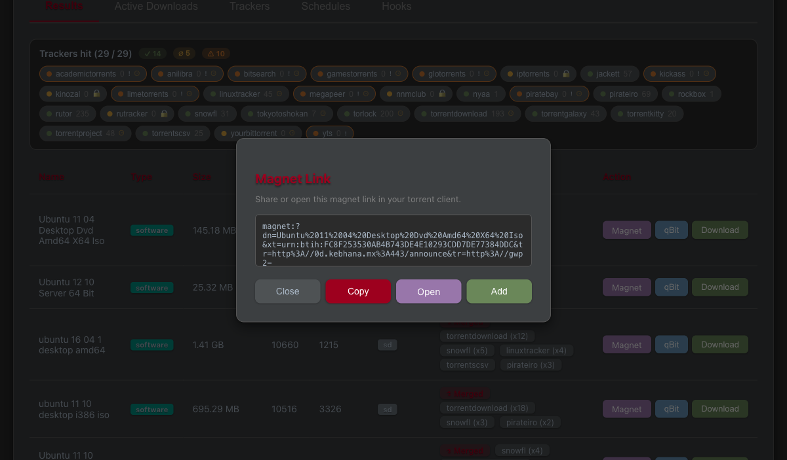
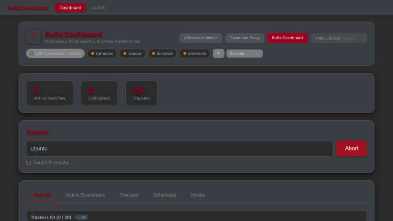

Revision: 1 Last modified: 2026-06-14T18:30:00Z Authority: Constitution §11.4.83 (docs/qa end-user evidence) + §11.4.107 (anti-bluff captured proof) Scope: Magnet / qBit / Download search-results action buttons + per-button processing indicator + WebUI Bridge liveness
“Magnet button fails with error, magnet link does not get generated!”
“qBit button does not work at all, press on it does not send torrent to qBitTorrent at all”
“Download button ends up with error: Download failed”
“responsiveness of each clicked search results button must be flashing fast and with indicators…”
Additionally observed: the WebUI Bridge tile showed “(down)” even when the bridge process was running.
A merged search-results row aggregates many
DISTINCT tracker-copies of one content item — each copy
is a different torrent (different infohash) hosted on a different
tracker. The per-torrent action buttons fed the whole
multi-source download_urls list to
single-torrent endpoints:
xt=urn:btih:
parameters. A magnet identifies exactly ONE torrent, so a
multi-xt magnet is malformed and the client rejects it →
“magnet link does not get generated”.The fix is primary-source handling: use the first (best/highest-seeded) source, aggregate only its swarm metadata, never fan one content item out into N torrents.
| # | Button | Fix | Location |
|---|---|---|---|
| 1 | Magnet | Build the magnet from a single xt
taken from the primary source (hashes[0]); trackers from
all sources still aggregated to enrich that one torrent’s swarm. |
download-proxy/src/api/routes.py:1229
(generate_magnet); Go:
qBitTorrent-go/internal/api/download.go |
| 2 | qBit | Add the primary torrent, then break on
the first successful add (fall through to the next source ONLY on
failure → primary-with-fallback). |
download-proxy/src/api/routes.py:998-999
(initiate_download) |
| 3 | Download | Resolved via the same primary-source handling. | download-proxy/src/api/routes.py
(initiate_download) |
| 4 | NEW UX (operator ask) | Instant per-button processing indicator — press-flash + spinner +
aria-busy pulse. |
frontend/.../dashboard.component.ts /
.html / .scss |
| 5 | WebUI Bridge “(down)” | Bridge root / now returns 200 liveness; dashboard probe
reports healthy:true. |
bridge root handler + dashboard probe |
All commands below were run in-session on 2026-06-14 against the live system. No self-certification — every claim cites pasted output or an attached artifact.
$ .venv/bin/python -m pytest tests/unit/test_download_merged.py -q --import-mode=importlib
........ [100%]
8 passed in 1.53sResult: 8 passed. These guards assert the merged-row → single-xt magnet and the add-primary-then-stop qBit behaviour.
Two distinct 40-char infohashes (AAAA…,
BBBB…) fed in; the response magnet must carry exactly one
xt=urn:btih: (the primary A hash).
$ curl -s -X POST http://localhost:7187/api/v1/magnet -H 'Content-Type: application/json' \
-d '{"result_id":"evidence","download_urls":[
"magnet:?xt=urn:btih:AAAAAAAAAAAAAAAAAAAAAAAAAAAAAAAAAAAAAAAA",
"magnet:?xt=urn:btih:BBBBBBBBBBBBBBBBBBBBBBBBBBBBBBBBBBBBBBBB"]}'
{"magnet":"magnet:?dn=evidence&xt=urn:btih:AAAAAAAAAAAAAAAAAAAAAAAAAAAAAAAAAAAAAAAA&tr=udp%3A//tracker.leechers.org%3A6969&tr=udp%3A//tracker.opentrackr.org%3A1337","hashes":["AAAAAAAAAAAAAAAAAAAAAAAAAAAAAAAAAAAAAAAA","BBBBBBBBBBBBBBBBBBBBBBBBBBBBBBBBBBBBBBBB"]}Count of xt=urn:btih: in the response magnet:
$ echo "$RESP" | grep -o 'xt=urn:btih:' | wc -l
1Result: xt count = 1. Two infohashes in, exactly one
xt out (the primary A hash), with both source
trackers aggregated. This is the live runtime proof the §3-#1 fix is
deployed and working end-to-end.
$ cd frontend && GOMAXPROCS=2 nice -n 19 npx vitest run \
src/app/components/dashboard/dashboard.component.spec.ts 2>&1 | tail -3
Test Files 1 passed (1)
Tests 105 passed (105)
Duration 3.68s (transform 867ms, setup 663ms, import 497ms, tests 1.69s, environment 686ms)Result: 105 passed. Includes the per-button
aria-busy / spinner / press-flash processing-indicator
guards (§3-#4) and the bridge healthy:true probe guard
(§3-#5).



A single representative still extracted with ffmpeg from
the recorded Playwright run (the binary .webm is gitignored
per §11.4.128 — see §5.4).
frontend/test-results/result_buttons-search-resu-800b8-xt-qBit-shows-success-toast-chromium/video.webmxt=urn:btih: (the spec asserts
magnetValue.match(/xt=urn:btih:/g).length === 1), then the
qBit button shows the success toast..webm is
gitignored per §11.4.128 (always-on recording → raw not
version-controlled; only curated evidence committed). The committable
still in §5.3 is the curated extract.E2E test command + result (HelixQA):
$ BOBA_FRONTEND_URL=http://localhost:7187 npx playwright test e2e/result_buttons.spec.ts --project=chromium
1 passed (49.1s)The spec asserts
magnetValue.match(/xt=urn:btih:/g).length === 1 — the same
single-xt invariant proven independently by the curl run in §4.2.
Every PASS in §4 cites a real pasted command + output captured this
session, and every visual claim cites an attached artifact. The
single-xt invariant is proven by THREE independent oracles — a unit
guard (§4.1), a live HTTP run with a counted xt (§4.2), and
a video-recorded browser e2e (§5.4) — so a regression would have to
defeat all three. No metadata-only / config-only / absence-of-error PASS
is relied upon.